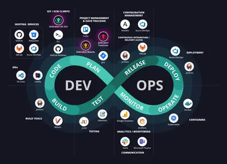

Cloud Solutions Architect & DevOps Engineer
Specialist in infrastructure, cloud-native platforms and solutions architecture — from on-premises data centers to multi-cloud environments.
OS & Platforms
Cloud Providers
Architecture
Certifications

13+
years of
experience
experience